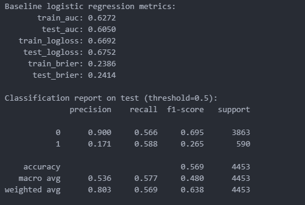
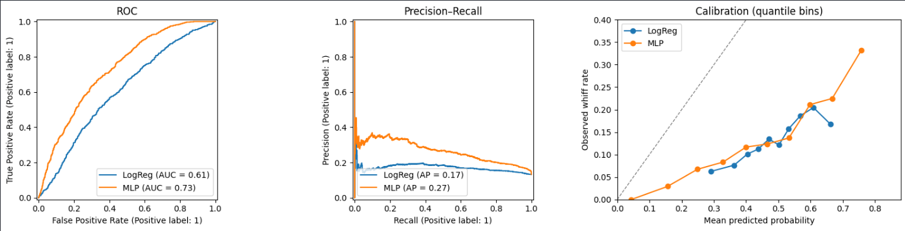
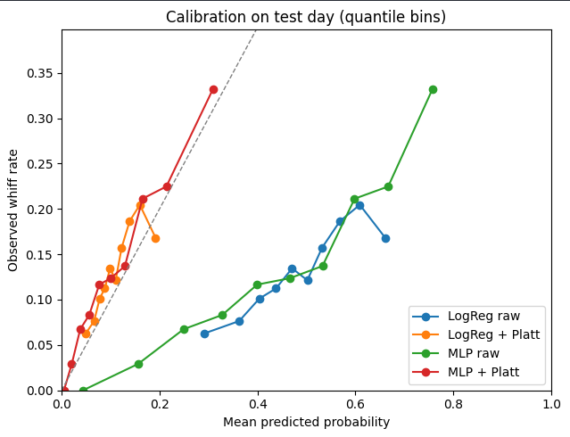

Predicting Whiffs: A Statcast Machine Learning Approach
Introduction
In the modern era of Major League Baseball, the "Three True Outcomes", strikeouts, walks, and home runs, have come to dominate the strategic landscape. Among these, the ability to generate a swing-and-miss, or a "whiff," is perhaps the most coveted skill for a pitcher. Unlike a ball put into play, which is subject to the whims of defensive positioning and stadium dimensions, a whiff represents a total victory for the pitcher. It eliminates variables, reduces the volatility of sequencing luck, and serves as one of the most stable predictors of long-term run prevention.
As the game has shifted toward a data-driven philosophy, the tools used to evaluate this skill have evolved. With the advent of Statcast, every individual pitch is tracked with millimeter precision. This project leverages that granularity to build a machine learning model capable of estimating the probability of a whiff on a pitch-by-pitch basis. Rather than asking "How many strikeouts did this pitcher get?", we ask: "Based on the physical profile of this specific delivery, what was the likelihood the batter would miss?"
Defining the Classification Problem
The objective of this project is a binary classification: predicting whether a pitch results in a Whiff (1) or No Whiff (0). A whiff is defined using Statcast’s specific event markers, specifically swinging_strike and swinging_strike_blocked.
One of the primary hurdles in this analysis is the inherent class imbalance of the dataset. As seen in the distribution of outcomes from the 2025 MLB season, whiffs represent a small minority of total pitches, typically between 10% and 15%. The vast majority of pitches result in called strikes, balls, fouls, or balls in play. In a machine learning context, this imbalance is dangerous; a naive model could achieve 85% accuracy simply by predicting "No Whiff" every time. To combat this, the modeling process required specific architectural choices, including class weighting and post-hoc calibration.
Data Acquisition and Feature Engineering
The data for this study was sourced from the 2025 MLB regular season using the pybaseball interface to Statcast. The resulting dataset contains hundreds of thousands of individual pitches, each acting as a unique observation. To provide the models with a comprehensive "view" of the pitch, I engineered features across three primary domains:
- Physical Properties: This includes
release_speed(velocity),release_spin_rate, andrelease_extension. These variables define the raw "stuff" of a pitcher. - Movement Profiles: I utilized
pfx_x(horizontal movement) andpfx_z(vertical movement) to capture how much a pitch deviates from a straight line. - Context and Location: Whiff probability is highly contextual. I included
plate_xandplate_zcoordinates to map the pitch’s position in the zone, along with the count (balls and strikes).
Because features like velocity and spin rate exist on vastly different numerical scales, I applied StandardScaler to all continuous inputs. This ensures the neural network treats each feature with appropriate weight, preventing high-magnitude variables from drowning out subtle movement data.
Modeling Approach: LogReg vs. MLP
To explore the complexity of pitch outcomes, I implemented and compared two distinct modeling architectures:
- Logistic Regression (The Baseline): I began with a Logistic Regression model to establish a performance floor. This linear approach is highly interpretable and serves as a vital benchmark for more complex methods. 
- Multi-Layer Perceptron (The Neural Network): The second model is a feedforward neural network (MLP) built using PyTorch. The architecture consists of an input layer, a hidden layer with ReLU activation, and an output layer producing a single logit. The MLP is designed to capture the non-linear "interdependencies" of pitching such as how a high spin rate might be highly effective at the top of the strike zone but detrimental at the bottom.
To address the class imbalance, I utilized BCEWithLogitsLoss with a pos_weight parameter. This penalized the model more heavily for missing a whiff than for misidentifying a non-whiff, forcing the network to learn the characteristics of the minority class.
Performance Analysis: Discriminatory Power
The performance of these models was evaluated using ROC-AUC (Area Under the Receiver Operating Characteristic Curve). In the context of baseball pitching data, an AUC of 0.70 to 0.75 is considered a strong signal, given the inherent “noise” of hitter tendencies and approach.
My results showed that the MLP offered a tangible improvement over the Logistic Regression baseline. The MLP achieved an AUC of 0.714, while the LogReg trailed slightly at 0.701. This indicates that the neural network was better able to distinguish between pitches that generated whiffs and those that did not. However, the relatively close scores suggest that the primary drivers of whiffs (velocity, location, and count) can be captured reasonably well even by linear methods.
To further evaluate model behavior, I examined the Precision–Recall curve, which is particularly informative for imbalanced outcomes like whiffs. Since whiffs occur far less frequently than non-whiffs, overall accuracy can be misleading. The Precision–Recall analysis showed that the MLP maintained slightly higher precision across most recall levels, meaning that when it predicted a pitch was likely to generate a whiff, it was more often correct. This suggests the neural network better captured nonlinear interactions, such as how pitch movement and velocity interact within specific counts, that contribute to swing-and-miss outcomes. However, the gains were incremental rather than dramatic, reinforcing the idea that the signal, while real, is inherently noisy.
Finally, I evaluated model calibration using an Observed Whiff Rate vs. Predicted Probability plot. This analysis examines whether predicted probabilities align with actual outcomes. Ideally, predictions should fall along the 45-degree line, indicating that a pitch predicted to have a 30% whiff probability results in an actual whiff approximately 30% of the time. Both models demonstrated reasonable calibration, but the MLP’s predictions tracked observed outcomes more closely in higher-probability bins. This suggests that beyond ranking pitches effectively, the neural network provided slightly more reliable probability estimates, which is an important consideration for decision-making contexts such as pitch sequencing or player development.
Taken together, these additional evaluations reinforce the ROC-AUC findings: the MLP provides measurable but modest improvements over Logistic Regression. While much of the whiff signal can be captured by linear relationships, incorporating nonlinear structure yields incremental gains in both discrimination and probability calibration.
The Necessity of Post-hoc Calibration
While the models were successful at ranking pitches by whiff probability, their raw outputs were not initially "honest" probabilities. Due to the class weighting used during training, the models were often over-confident, pushing predicted probabilities into ranges that did not match reality. This led to the most critical phase of the project: Post-hoc Calibration via Platt Scaling.
Calibration ensures that if a model predicts a 20% chance of a whiff, the event actually happens 20% of the time in the long run. I evaluated the results using Log Loss and Brier Score, and the improvement was dramatic:
- The MLP Raw model had a Log Loss of 0.58, indicating poor probabilistic alignment. 
- After Platt Scaling, the MLP Calibrated model’s Log Loss dropped to 0.39.
Practical Applications in Player Evaluation
The ability to generate a well-calibrated "Expected Whiff" (xWhiff) metric has three immediate applications in a Major League front office:
- Luck Regression: If a pitcher has a 12% actual whiff rate but an xWhiff of 18%, they are likely "unlucky" and prime for a breakout.
- Pitch Design: By holding all other variables constant and tweaking a single feature, like adding an inch of vertical break, we can use the model to see exactly how much that physical change improves the probability of a miss.
- Arsenal Optimization: The model can identify "dead zones" in a pitcher's repertoire where their specific pitch profile is mathematically unlikely to generate a swing-and-miss.
Conclusion
This project demonstrates that while individual pitch outcomes are subject to significant variance, the underlying probability of a whiff can be modeled with high reliability. By comparing a linear baseline to a neural network, we found that a Multi-Layer Perceptron offers superior discriminatory power. However, the most vital takeaway is that raw machine learning outputs are often insufficient; post-hoc calibration is the bridge that turns raw model scores into meaningful, actionable baseball intelligence. As Statcast data continues to grow in complexity, these calibrated models will remain the cornerstone of elite player evaluation and development.
Full project available on GitHub.